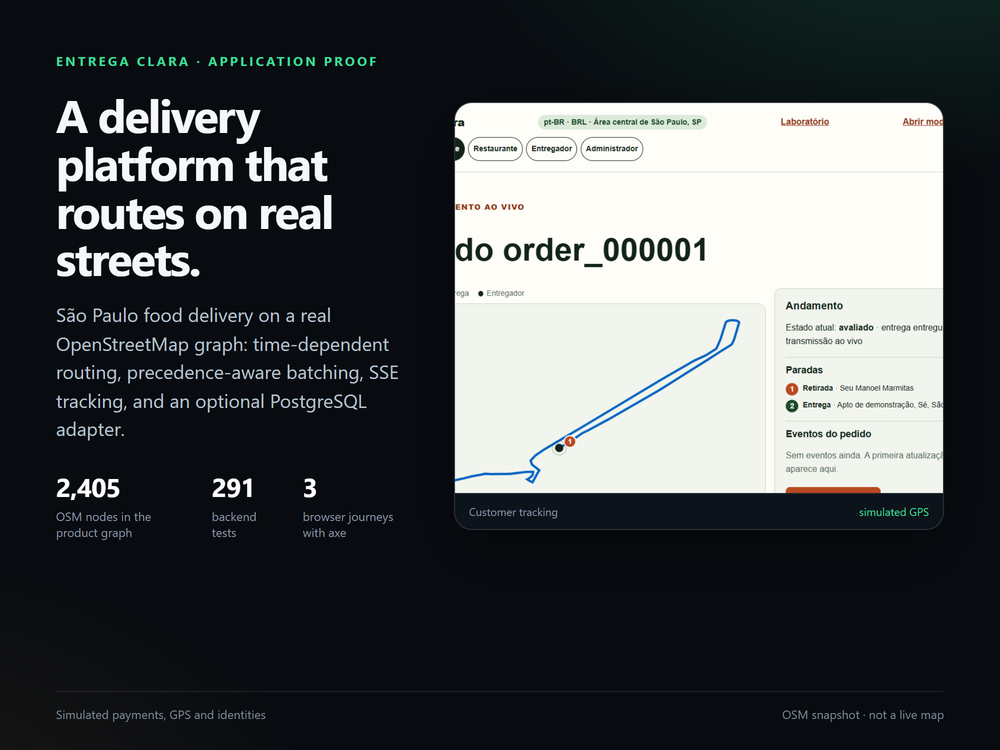
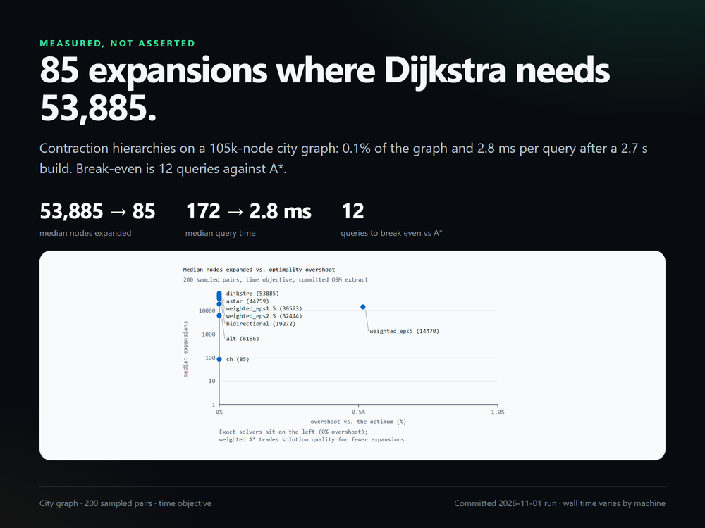
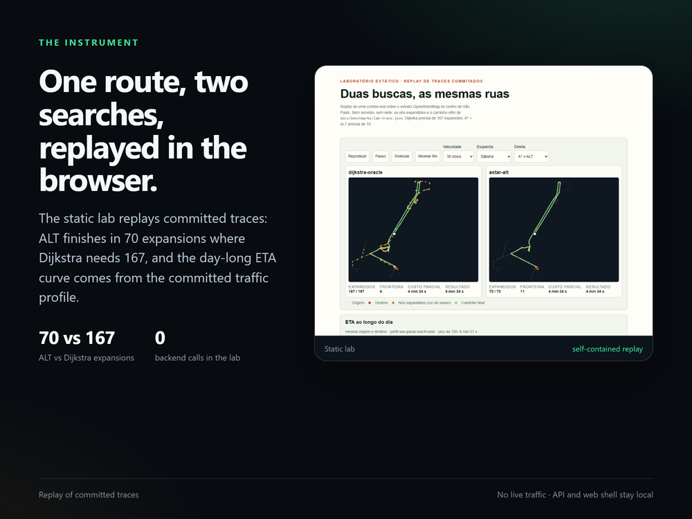

entrega-clara
Pathfinding on real São Paulo streets, inside a food-delivery platform.
A customer-to-delivery lifecycle on a real OpenStreetMap graph: time-dependent routing, precedence-aware batching, SSE tracking, an optional PostgreSQL adapter with a transactional outbox, and a solver ladder measured on a 105k-node city graph. The static lab replays the committed traces in the browser, so a reviewer can watch the search without installing anything.
What it proves
Conventional engineering with a measured core: domain modelling, transactions, algorithms and trade-offs.
A real graph, not a toy fixture
The product and lab run on a 2,405-node central São Paulo OSM extract, filtered to its largest strongly connected component. The city benchmark uses a 104,991-node graph. Distances, ETAs and solver results come from the committed street data, not a synthetic lattice.
A measured solver ladder
Dijkstra → A* → ALT landmarks → bidirectional → weighted ε-A*, plus contraction hierarchies. On 200 sampled city pairs: Dijkstra 53,885 expansions (51.3%) / 172 ms; CH 85 (0.1%) / 2.8 ms after a 2.7 s build. Break-even is 12 queries against A*.
City benchmarkBatching that respects precedence
Held-Karp with pickup-before-dropoff precedence, capacity and promised windows, plus dynamic re-insertion of a new order into an active batch. The 7-stop city batch costs ~2.7 s to price and saves 6,584 s of driving time (38%) over the baseline.
Verification recordThe three captures
1000×750 cards, each with its own limit in the footer. Sources, crop arithmetic and re-run commands: docs/images/portfolio.

Cover — the product surface and the current test counts.

Evidence — 53,885 → 85 expansions, 172 → 2.8 ms, break-even 12 queries.

Instrument — the static lab replaying ALT 70 vs Dijkstra 167.
What it does not prove
Simulated operations
Payments, GPS, identities and notifications are seeded or simulated. No real funds, card data or customer records are involved.
A dated street snapshot
The graph is an OpenStreetMap extract (ODbL), not a live map. Distances and ETAs change when the extract is regenerated.
Not a hosted product
The static lab is hosted; the API and web shell are not deployed by CI. PostgreSQL is optional and single-writer; row-per-aggregate tables and migrations are not built.